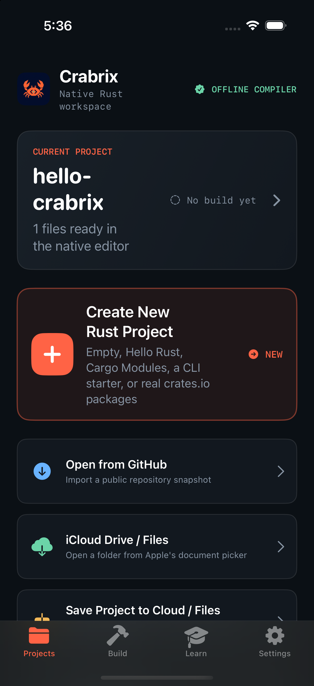
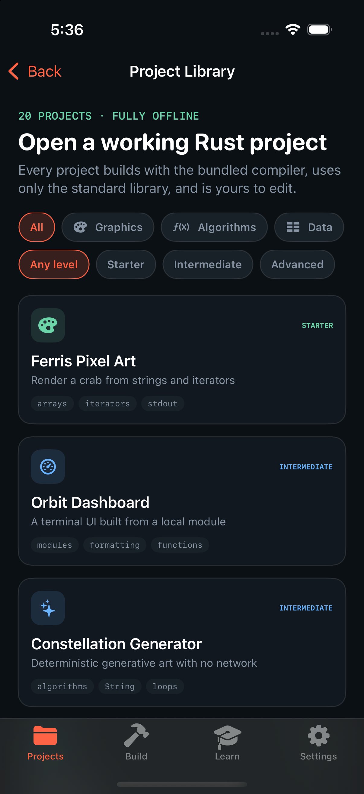
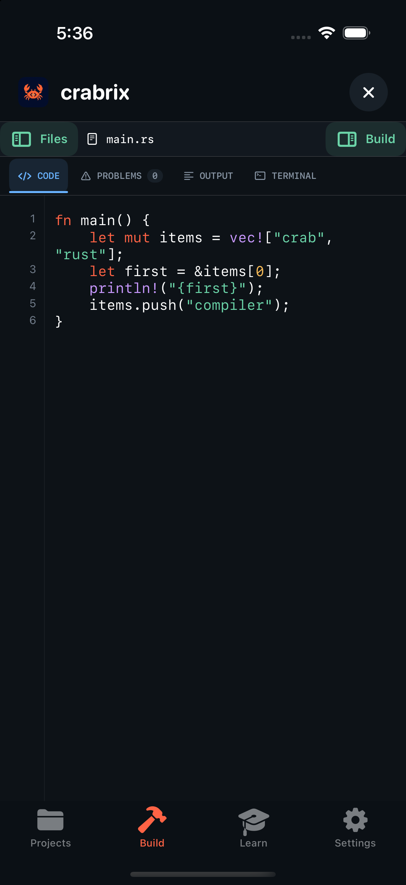
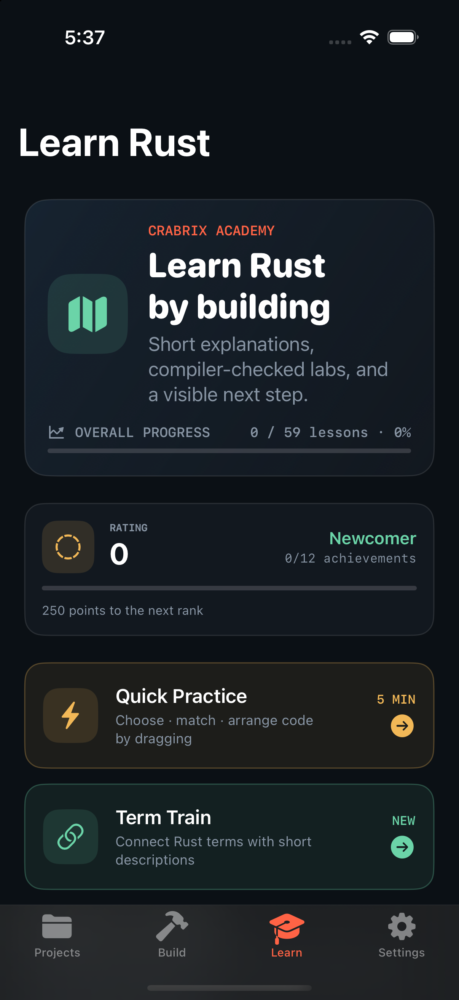
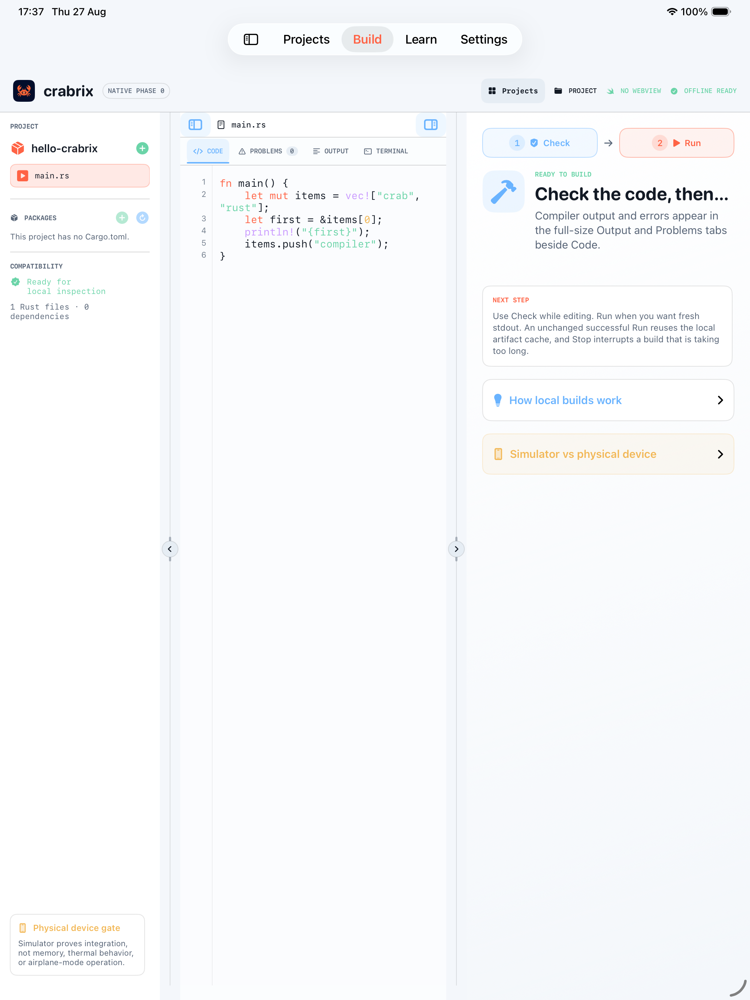

A real Rust compiler,
in your pocket.
Crabrix runs rustc itself on your device. Not a sandbox that phones home,
not a syntax-highlighted notepad — the actual compiler, resolving real crates.io
packages and producing real diagnostics, with the network off.
What it actually does
Four things that normally require a laptop, done on a phone.
Compiles Rust on device
A pinned WASI build of rustc executes inside a Swift WebAssembly
interpreter. Real type checking, real borrow checking, real error codes — the
first compile is genuine, and identical repeat runs come from a local cache.
Resolves real crates.io packages
Sparse-index resolution, SemVer and feature unification, target filtering,
SHA-256-verified downloads, dependency compilation, and --extern
linking. It writes a real Cargo.lock. Cached dependencies rebuild
while iOS retains them, and Pin for Offline keeps their exact
verified archives durable after a cache eviction.
Teaches from the compiler
142 guided Rust lessons plus a 200-pattern Algorithm Atlas. Every algorithm moves from mental model to use cases to a local Rust challenge.
Works with the network off
The toolchain ships inside the app and never downloads at runtime. Once a project's packages are cached, it builds in airplane mode.
On the device
Adaptive layout: a workspace on iPad, drawers on iPhone.





The curriculum
Six language courses with 142 lessons, plus 20 independent solution-method chapters with 200 patterns and 600 steps ordered inside their method.
Plus Quick Practice, Term Train with a timed mode, Code Recall, 37 achievement ladders of five tiers each, and a rating you earn across everything you do.
Price
Buy it once. It is yours, on iPhone and iPad, with every update included.
- One-time purchase — no subscription, ever
- Buy at the launch price and later increases never touch you
- Universal: iPhone and iPad, one buy
- No in-app purchases and no paywalled features
- No ads, no analytics, no tracking, no account required
- Free updates
The compiler, the package manager, and the whole curriculum are in the app you buy. Nothing is held back for a second transaction.
What it does not do
A compiler on a phone has real edges. Better you read them here than discover them later.
- Procedural macros do not run. They need a host-native compiler, so
serde'sderivefeature and anything like it is reported as unsupported rather than silently mis-built. - Build scripts are not executed. Many crates whose
build.rsonly probes compiler features still work, and those are flagged for review rather than blocked. - Crates that link native C libraries are out of reach, as are ones that build only as
cdyliborstaticlib. - Builds take minutes, not seconds.
rustcruns in an interpreter. A first build with one package is around five minutes; the identical rebuild is under a second from cache. - The codegen backend has gaps. A few crates hit unimplemented 64-bit operations. Crabrix records the real outcome of every dependency build and shows it, with the compiler's own reason.
Questions
Is this really compiling, or is it sending my code to a server?
Really compiling. The rustc binary and its wasm32-wasip1 sysroot are inside the app bundle, verified by SHA-256 at build time. Turn on airplane mode and it still compiles. The only network calls are ones you start: importing a public GitHub snapshot, searching crates.io, and downloading packages.
Which crates work?
Pure-Rust, no-std-friendly and std crates that do not need proc macros or native libraries. Verified working examples include smallvec, memchr, log, once_cell, arrayvec, either, cfg-if and anyhow. Crabrix records what actually built and tells you the reason when something does not.
Do I need an account?
No. There is no sign-in, no cloud sync, no analytics, and no leaderboard. Your projects, your progress, and your rating live on your device.
Does it work offline?
The compiler, curriculum, and local projects work offline. Cached dependencies rebuild while iOS retains them; Pin for Offline keeps their exact verified archives durable after a cache eviction. First-time package downloads and GitHub imports require a connection.
Can I get my projects in and out?
Yes. Import a folder from Files or iCloud Drive, import a public GitHub repository snapshot, or open a shared GitHub link straight from Safari. Export as an editable .crabrixproject package or as a plain ZIP for AirDrop, Mail, or Files.
Why is it a one-time purchase?
Because it is a tool, not a service. Nothing runs on a server on your behalf, so there is no recurring cost to pass on.
Which devices does it need?
iOS and iPadOS 18 or newer. It runs on an iPhone, but a compiler is CPU-heavy work: newer devices build noticeably faster, and an iPad gives you the full multi-panel workspace.
About
Crabrix is built by Serhii Ziborov. It began as one stubborn question — whether a real Rust compiler could type-check and run code inside an iPhone app while offline — and turned into a workspace once the answer was yes.
The source is publicly readable on GitHub for review and evaluation. It is commercial software, not an open-source project: reuse, redistribution, or derivative works need written permission. Bundled third-party components keep their own licences and attributions.